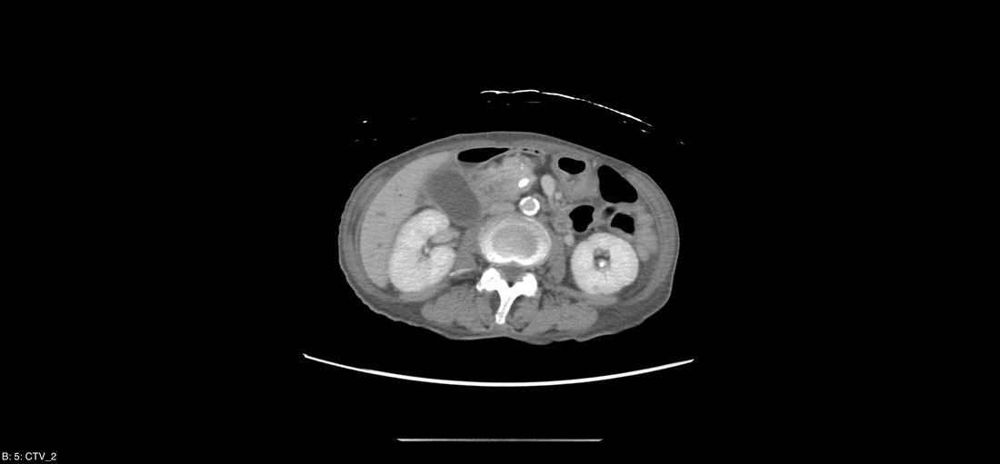
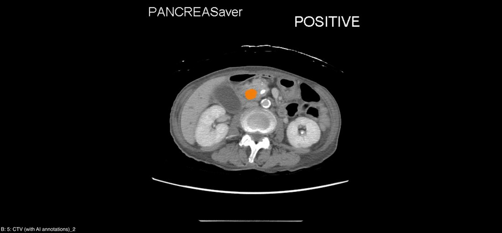

她因例行健檢接受腹部 CT。左圖是原始影像，右圖是 PANCREASaver 判讀結果 — 橘色標記處，是 AI 在胰臟尾部發現的 1.2cm 早期病灶。


拖曳滑桿，比較原始影像與 AI 判讀
不會。PANCREASaver 是「輔助偵測」系統 — 最終判讀與診斷永遠由醫師決定。AI 的任務是幫醫師找到可能被忽略的病灶，讓醫師的專業發揮在最重要的地方。
完全不會。病患只需照平常方式接受 CT 檢查，PANCREASaver 在背景自動運作，病患與醫師都不需要額外操作。
可以直接詢問檢查機構，或透過本網站「聯絡我們」留下資訊，我們會協助確認可提供服務的院所。
<2cm 病灶偵測敏感度 92.1%，全國 1,473 例驗證 AUC 0.95，並獲得 TFDA 醫療器材許可與 FDA Breakthrough 資格。所有數據均來自真實臨床研究。